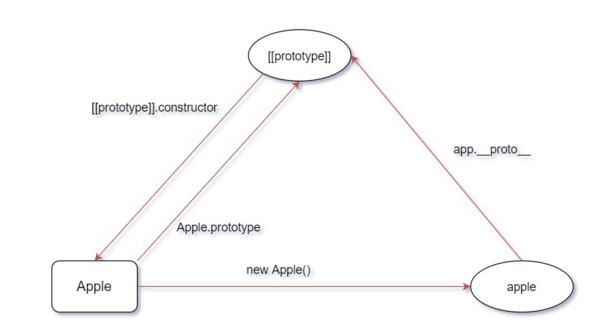
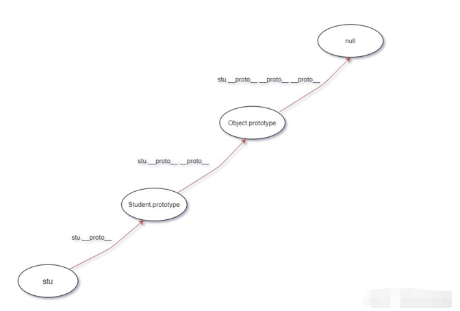

数据类型
1.基本数据类型：String Number Boolean Undefined Null Symbol BigInt
2.引用数据类型：Object Array Date Function
判断数组和对象的方法
1.typeof除了array和null判断为object外，其他的都可以正常判断
2.参数 instanceof Array|Object
var arr = [1,2,3,1];
alert(arr instanceof Array); // true3.对象的constructor属性
var arr = [1,2,3,1];
alert(arr.constructor === Array); // true 以上两种方法看似完美，其实还有bug。由于每个iframe都有一套自己的执行环境，跨frame实例化的对象彼此是不共享原型链的，因此导致上述检测代码失效
4.判断是否为数组 Array.isArray(参数) 是则返回true
5.Obejct.protoType.toString.call(参数)
var arr = [1,2,3,1];
var arr2 = [{ abac : 1, abc : 2 }];
function isArrayFn(value){
if (typeof Array.isArray === "function") {
return Array.isArray(value);
}else{
return Object.prototype.toString.call(value) === "[object Array]";
}
}
alert(isArrayFn(arr));// true
alert(isArrayFn(arr2));// true深拷贝和浅拷贝的区别?
浅拷贝:将内存中的某个对象复制一份,在内存中开辟一块新的空间,如果复制的这个对象的属性为基本数据类型 ,则拷贝的便为这个值本身,如果为复杂数据类型,则拷贝复制的为地址,因此,修改新对象会对原对象产生影响
深拷贝:开辟一块新的空间,完整的复制一份,包括复杂数据类型,拷贝的这个对象和原对象无任何关系,修改什么 的都互不影响
function deepClone(obj) {
if (obj === null) return null; //null 的情况
if (obj instanceof RegExp) return new RegExp(obj); //正则表达式的情况
if (obj instanceof Date) return new Date(obj); //日期对象的情况
if (typeof obj != "object") {
//非复杂类型,直接返回 也是结束递归的条件
return obj
}
//[].__proto__.constructor=Array()
//{}.__proto__.constructor=Object()
//因此处理数组的情况时,可以取巧用这个办法来new新对象
var newObj = new Object.getPrototypeOf(obj).constructor;
for (var key in obj) {
newObj[key] = deepClone(obj[key])
}
return newObj;
}typeof 和 instanceof的区别?
typeof可以判断出基本数据类型Number|String|Boolean|Undefined|Symbol|BigInt(除了null),还可以正确判断出某个对象是否为function,其余的Date,Array等无法判断 ;instanceof相反,可以准确判断出复杂数据类型,但是无法判断简单数据类型.
instanceof的原理：
[对象] instanceof [构造函数]
只要右边变量的 prototype 在左边变量的原型链上即可。因此，instanceof 在查找的过程中会遍历左边变量的原型链，直到找到右边变量的 prototype，如果查找失败，则会返回 false
JavaScript 原型
原型的英文应该叫做 prototype，任何一个对象都有原型，我们可以通过非标准属性 __proto__来访问一个对象的原型：
// 纯对象的原型默认是个空对象
console.log({}.__proto__); // => {}
function Student(name, grade) {
this.name = name;
this.grade = grade;
}
const stu = new Student('xiaoMing', 6);
// Student 类型实例的原型，默认也是一个空对象
console.log(stu.__proto__); // => Student {}__proto__ 是非标准属性，如果要访问一个对象的原型，建议使用 ES6 新增的Reflect.getPrototypeOf 或者 Object.getPrototypeOf() 方法。非标准属性意味着未来可能直接会修改或者移除该属性，说不定以后出了个新标准用 Symbol.proto 作为 key 来访问对象的原型，那这个非标准属性可能就要被移除了。
console.log({}.__proto__ === Object.getPrototypeOf({})); // => true构造器和 prototype
构造器的英文就是 constructor，在 JavaScript 中，函数都可以用作构造器。构造器我们也可以称之为类，Student 构造器不就可以称之为 Student 类嘛。我们可以通过 new 构造器来构造一个实例。
function Apple() {}
const apple = new Apple();
console.log(apple instanceof Apple); // => true
// 实例的原型即 apple1.__proto__
console.log(apple1.__proto__ === Apple.prototype); // => true
console.log(apple2.__proto__ === Apple.prototype); // => true任何构造器都有一个 prototype 属性，默认是一个空的纯对象，所有由构造器构造的实例的原型都是指向它
构造器的 prototype 有一个 constructor 属性，指向构造器本身：
console.log(Apple.prototype.constructor === Apple); // => true__proto__ ，prototype，constructor，Apple函数，实例 apple 和原型对象[[prototype]] 之间的关系：

__proto__ 存在于所有的对象上，prototype 存在于所有的函数上，他俩的关系就是：函数的prototype 是所有使用 new 这个函数构造的实例的 __proto__。函数也是对象，所以函数同时有 __proto__ 和prototype。
原型链
当在一个对象 obj 上访问某个属性时，如果不存在于 obj，那么便会去对象的原型也就是obj.__proto__ 上去找这个属性。如果有则返回这个属性，没有则去对象 obj 的原型的原型也就是 obj.__proto__.__proto__去找，重复以上步骤。一直到访问纯对象的原型也就是Object.prototype，没有的话续往上找也就是 Object.prototype.__proto__，其实就是 null，直接返回 undefined。
function Student(name, grade) {
this.name = name;
this.grade = grade;
}
const stu = new Student();
console.log(stu.notExists); // => undefined访问 stu.notExists 的整个过程是：
- 先看
stu上是否存在notExists，不存在，所以看stu.__proto__ stu.__proto__上也不存在notExists属性，再看stu.__proto__.__proto__，其实就是纯对象的原型：Object.prototype- 纯对象的原型上也不存在
notExists属性，再往上，到stu.__proto__.__proto__.__proto__上去找，其实就是 null - null 不存在
notExists属性，返回 undefined
可能看了上面会有疑问，对象的原型一直查找最后会找到纯对象的原型？测试一下就知道了：proto__.proto === {}.proto); // => true
**纯对象**的原型的原型是 null：
```
console.log(new Object().__proto__.__proto__); // => null各个原型之间构成的链，我们称之为原型链。

函数 Student 的原型链应该是怎样的？

GET、POST是什么？HTTP是什么？
GET和POST是HTTP协议中的两种发送请求的方法。
HTTP是基于TCP/IP的关于数据如何在万维网中如何通信的协议。
- GET在浏览器回退时是无害的，而POST会再次提交请求。
- GET产生的URL地址可以被Bookmark，而POST不可以。
- GET请求会被浏览器主动cache，而POST不会，除非手动设置。
- GET请求只能进行url编码，而POST支持多种编码方式。
- GET请求参数会被完整保留在浏览器历史记录里，而POST中的参数不会被保留。
- GET请求在URL中传送的参数是有长度限制的，而POST没有。
- 对参数的数据类型，GET只接受ASCII字符，而POST没有限制。
- GET比POST更不安全，因为参数直接暴露在URL上，所以不能用来传递敏感信息。
- GET参数通过URL传递，POST放在Request body中。
- GET产生一个TCP数据包；POST产生两个TCP数据包。在网络差的情况下，两次包的TCP在验证数据包的完整性上有很大优势；并不是所有浏览器发送POST请求都会发送两次，Firefox就是发送一次；
请你讲一下对于JS中模块的理解，Commonjs、 AMD和CMD分别有什么特点？
1.什么是模块
- 将复杂的程序依据一定的规则(规范)拆分成多个模块(文件)
- 模块的内部数据与实现是私有的, 只是向外部暴露一些接口(方法)与外部其它模块通信
2.好处
模块化开发方便代码的管理，提高代码复用性，降低代码耦合，每个模块都会有自己的作用域，防止变量污染。
3.Commonjs、 AMD和CMD分别有什么特点？
- CommonJS 模块输出的是一个值的拷贝，CommonJS 模块是运行时加载，CommonJS规范主要用于服务端编程，加载模块是同步的，同步意味着阻塞加载，浏览器资源是异步加载的，因此有了AMD、CMD解决方案。
- AMD 是
RequireJS在推广过程中对模块定义的规范化产出。AMD规范在浏览器环境中异步加载模块，而且可以并行加载多个模块。AMD 的 API 默认是一个当多个用，对于依赖的模块，AMD 推崇提前执行(依赖前置) - CMD 是
SeaJS在推广过程中对模块定义的规范化产出。CMD 的 API 严格区分，职责单一，加载模块是异步的，CMD 推崇延迟执行（依赖就近）。** - ES6 模块输出的是值的引用，ES6 模块是编译时输出接口，ES6 在语言标准的层面上，实现了模块功能简单，完全可以成为浏览器和服务器通用的模块解决方案。
什么是闭包？
闭包是一个有权访问其他函数作用域内的变量的函数。
由于在JS中，变量的作用域属于函数的作用域。函数在执行完之后，作用域会被销毁，内存也随之回收。但是闭包是创建在一个函数内部的子函数，由于其能访问上级作用域的原因，上级函数执行完之后作用域不会被销毁，此时子函数——也就是闭包，它拥有访问上级作用域的变量的权限，即使上级函数执行完之后作用域的变量也不会被销毁。
闭包解决了什么？
由于闭包可以缓存上级作用域，这使得外部函数打破“函数作用域”的束缚，可以访问函数内部的变量。这里以日常使用的Ajax成功回调为例，这个回调也是一个闭包，回调函数拥有对整个上级作用域的访问和操作能力，这样提供了较大的便利。开发者不需要再去写钩子函数去操作上级函数作用域内的变量了。
闭包有哪些应用场景?
闭包随处可见，一个Ajax请求的成功回调，一个事件绑定的回调方法，一个setTimeout的延时回调，或者一个函数内部返回另一个匿名函数，这些都是闭包。简而言之，无论使用何种方式对函数类型的值进行传递，当函数在别处被调用时都有闭包的身影。
箭头函数的this指向
行内和块级元素的区别
行内元素如何设置宽高
Flex：1什么意思